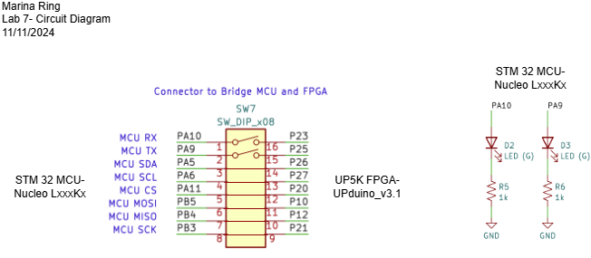
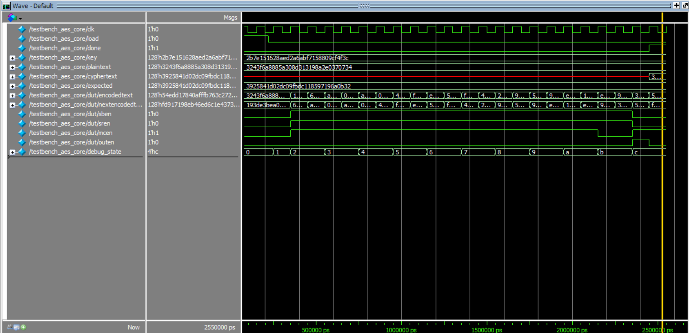
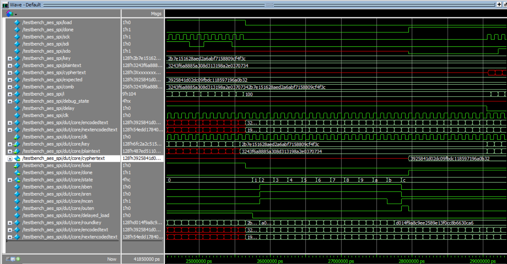
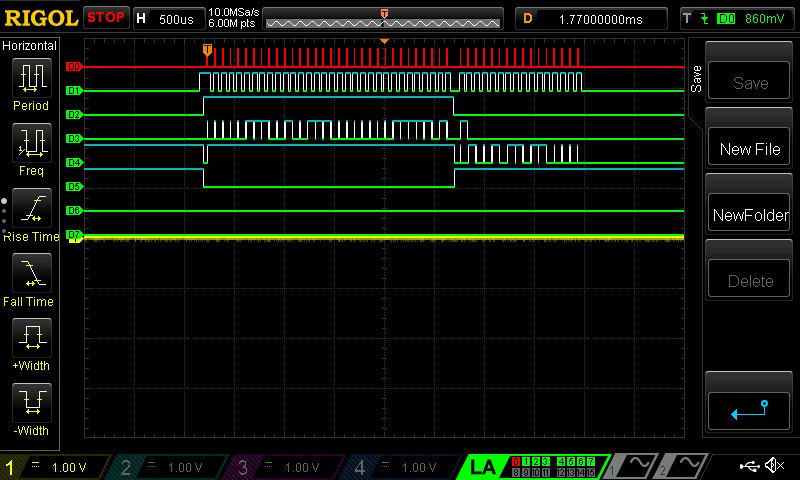
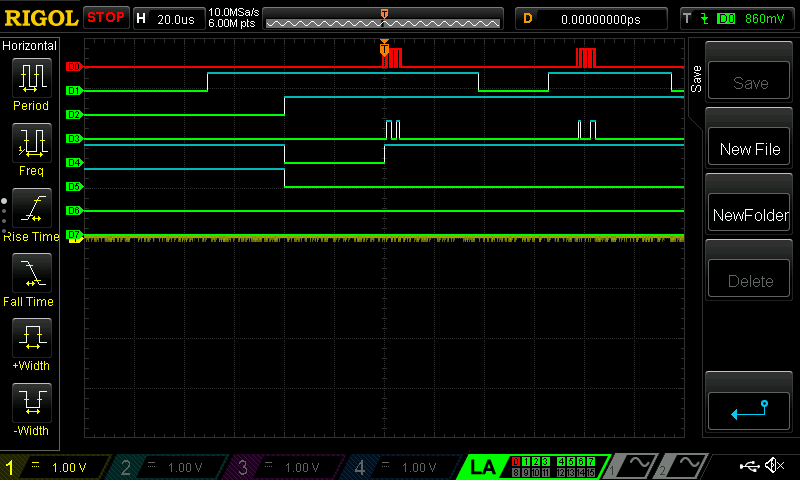
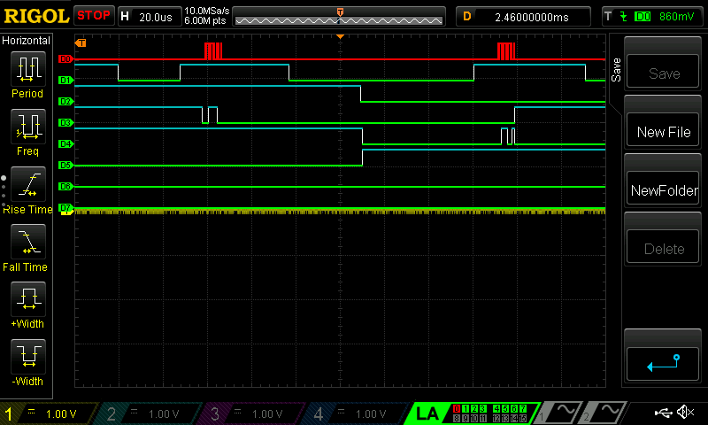

Lab 7: The Advanced Encryption Standard
Introduction
In this lab, I implemented the Advanced Encryption Standard (AES) protocol on an FPGA, which communicated with an MCU to receive data to be encrypted and sent encrypted data back. One of the important considerations for this lab was space constraints on the FPGA. I needed to be mindful of this when building the architecture of my system to keep it fast and efficient. See the E155 Lab 7 Page for a more detailed overview of the specifications and instructions for this lab.
All code written for this lab can be found on my E155 Lab 7 Repository on Github.
Setup and Circuitry

The FPGA was connected to the MCU using the SPI protocol. Additionally, two LEDs, PA9 and PA10, were used to display whether the MCU received the correct or incorrect, respectively, cypertext back
for a predefined set of plaintext and encryption key. The wiring diagram is shown on the left. All of these connections already existed on our circuitboard.
I did not need to use any external wiring.
Part of the AES protocol calls for values in the cypher text to be subsituted by referencing a predefined array of values. The FPGA does not have enough LUTs in order to create the logic for our encryption and store multiple sets of a preloaded array. Instead, DRAM on the FPGA can be used, but note that an extra clock cycle is needed in order to load values from the array. This adds one clock cycle of delay to each AES round in our system.
State Definitions and Encodings
AES has four operations it may perform during one round: substituting bytes, shifting rows, mixing columns, and expanding a key and
taking the exclusive or between that key and the current cyphered text. It performs combinations of these operations over ten rounds.
In order to control which operations were happening in a certain round and keep track of the current round of the AES process, I implemented
a controller. The process diagram is shown on the left to motivate the design of the controller.
Note that within each operation, there is a mux that chooses whether the block will output the modified signal or the original signal.
Below is an FSM detailing the transitions of my controller. Each state in the FSM represents rounds in the AES process or buffer states. States 0 and 13 are idle states where the system waits for a load signal to restart the AES cycle. State 12 is a buffer state that allows the final cyphered text to be loaded to the output before sending the done signal in state 13. State 1 is the pre-processing step for AES, where the plain text input is exclusive or'd with the key input. States 2-11 are the 10 rounds that make up AES. Each AES round lasts two clock cycles because of a clock cycle delay in the substitution bytes step, so each transition is dictated by a counter to ensure each round waits for one additional clock cycle before transitioning.
From this transition diagram, I wrote the following transitions and outputs. The current state of the controller was tied to the AES round the system was currently performing as well as what steps were enabled for each round. For example, the tenth step of AES (round 10 or state 11) is notable because the mix columns step is not performed. During this round, the enable signal for mix columns is turned off while the enable signals for other AES operations are turned on. During idle states, none of the operations are turned on.
Software and Verification
Below is a block diagram detailing my implementation of the AES encryption process on the FPGA. As mentioned previously,
the sub_bytes module loads substituted values from memory, taking an extra clock cycle to complete. All other operations in the AES
algorithm are carried out in combinational blocks. Additionally, the round key is computed using sub_bytes so it needs an extra
clock cycle to compute. The timing for this is controlled within the aes_controller such that is computed in time to be exclusive or'd with the cyphered
text that went through the AES process.
Each module was tested using a testbench. I will show here only the pictures of the results of simulating aes_core and aes, since these are the larger modules and require all submodules to function correctly in order to work properly. But, through individual testbenches, I found all modules to be funcioning correctly.
 The ModelSim waveform output of the aes_core testbench
 The ModelSim waveform output of the aes_spi testbench
After successfully simulating, it was time to move on to validating the hardware. Just because something simulates correctly, does not always mean it will
translate correctly into hardware. I learned that lesson the hard way during this lab! Below are a series of three images that show the output of a logic
analyzer for the whole processing cycle (SPI signal in, encrypting, and sending SPI signal back out), a zoomed in portion showing the signals when the MCU
first starts sending data, and a zoomed in portion showing the transition between transmitting, encrypting, and receiving.
In these photos, D0 is the clock signal, D1 is an artificial chip select signal for the purposes of decoding on the oscilliscope,
D2 is the "load" signal, D3 is the COPI signal, D4 is the CIPO signal, and D5 is the "done" signal.
 The logic analyzer signals during transmitting, encrypting, and receiving
 The logic analyzer signals when transmitting begins- note how "load" goes high and stays high while transmitting
 The logic analyzer signals when encrypting occurs- note how "load" goes low, then how "done" goes high very quickly after, and then receiving begins
I successfully compiled and uploaded my code to the STM32 microcontroller. The design meets all of the requirements.
The LED connected to PA9 lit up! This indicated success as PA9 is tied to the received encrypted text matching the expected encrypted text on the microcontroller.
This lab took me an estimated 25 hours to complete.